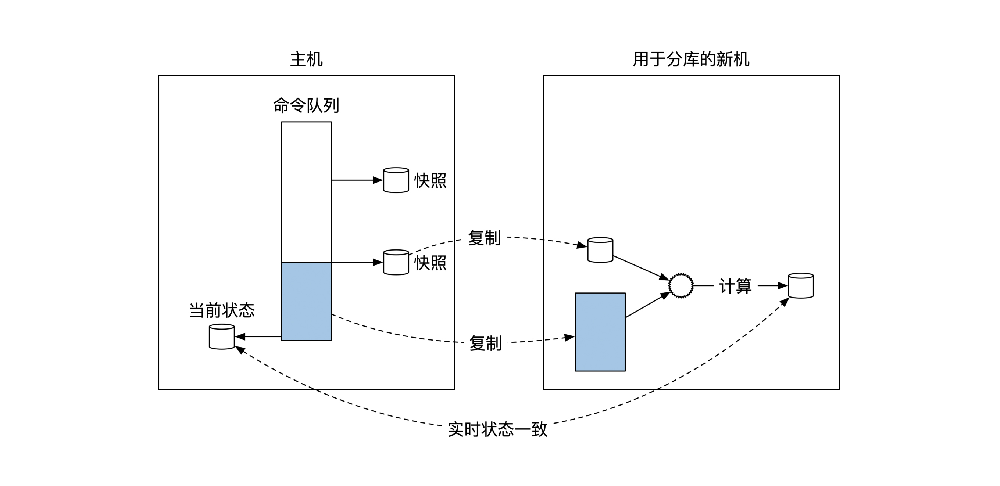
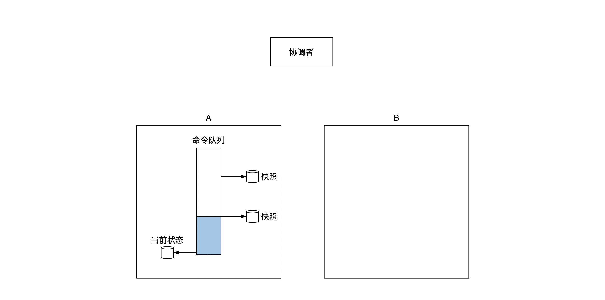
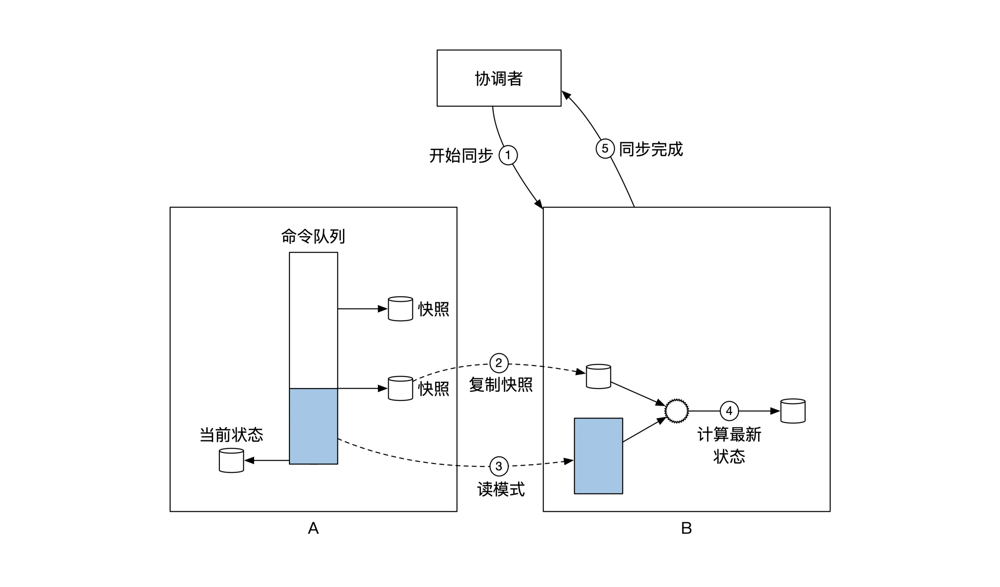
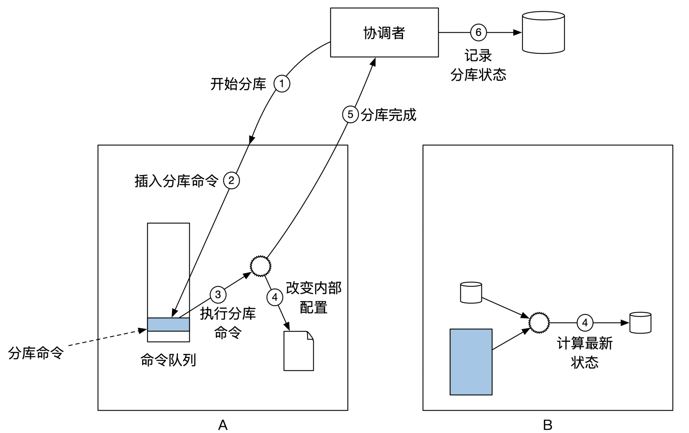
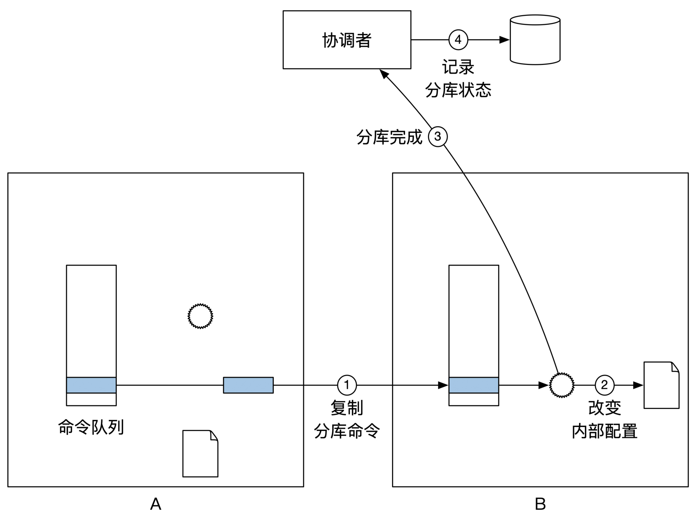

- 00 开篇词 如何成为金融级人才？.md.html
- 01 业务初探：扫了二维码之后发生了什么？.md.html
- 02 原理解读：如何理解第三方支付的业务逻辑和系统组件？.md.html
- 03 产品大观：不同金融业务都有哪些技术实现要点？.md.html
- 04 领域驱动设计（上）：如何设计金融软件顶层架构？.md.html
- 05 领域驱动设计（下）：如何设计统一的金融业务模型？.md.html
- 06 计算输入的正确性：怎么选择正确时间的数据？.md.html
- 07 计算过程的正确性：如何设计正确的数据处理架构？.md.html
- 08 计算结果的正确性：怎么保证计算结果是正确的？.md.html
- 09 数据传输的质量：金融业务对数据传输有什么要求？.md.html
- 10 数据存储的合理性：金融业务可以不用关系型数据库吗？.md.html
- 11 系统优化：如何让金融系统运行得更快？.md.html
- 12 正确性分级（上）：单机无备份有哪几种不同的一致性？.md.html
- 13 正确性分级（中）：多机无容灾有哪几种不同的一致性实现？.md.html
- 14 正确性分级（下）：多机有容灾有哪几种不同的一致性？.md.html
- 15 分布式正确性的存在性（上）：什么情况下不存在分布式共识算法？.md.html
- 16 分布式一致性（下）：怎么理解最简单的分布式一致性算法？.md.html
- 17 正确性案例（上）：如何实现分布式的事件溯源架构？.md.html
- 18 正确性案例（中）：常见分布式数据方案的设计原理是什么？.md.html
- 19 正确性案例（下）：如何在运行时进行数据系统的动态分库？.md.html
- 20 容灾（上）如何实现正确的跨机房实时容灾？.md.html
- 21 容灾（下）：如何通过混沌工程提高系统稳定性？.md.html
- 春节策划第1期 分布式金融系统知识，你掌握了多少？.md.html
- 春节策划第2期 读书如抽丝，为你推荐一些我读过的好书.md.html
- 春节策划第3期 如何运用架构知识解读春运买票和手游案例？.md.html
- 答疑集锦（一） 思考题解析与外汇架构知识拓展.md.html
- 答疑集锦（三） 思考题解析与数据库底层实现.md.html
- 答疑集锦（二） 思考题解析与账务系统优化.md.html
- 结束语 金融之道，与你同行，虽远尤欣.md.html
- 捐赠
19 正确性案例（下）：如何在运行时进行数据系统的动态分库？
你好，我是任杰。这一讲我想和你聊一聊如何在运行时进行数据系统分库。
如果你需要进行数据系统分库，那么恭喜你，你的业务量又上了一个新的台阶。但是随之而来也有一个坏消息，那就是分库的过程想做得好的话会很困难。如果做得不好，可能你在每次集群的扩容前，都需要暂停业务，这样会带来一定的经济损失。
所以，为了解决这个问题，我们今天就来学习一下怎么做动态扩容。
支持分库功能的架构目标分析
在我们学习如何实现动态分库之前，先来看看我们的设计目标是什么。
最原始的分库方法是先将业务暂停，这样就不会有人修改数据系统。接着要完成数据系统备份，以防出错后回滚所有操作。然后按照预定的逻辑将数据切分到不同的机器上。如果测试结果没问题，那么就重启业务。
虽然这个方法清晰简单，但是带来的问题是业务需要暂停很久的时间。这个过程的示意图如下：
所以，分库并不是一个不能解决的问题，只是我们希望分库的时间越短越好。那前面说的这几个步骤在时间上还能不能再优化一下呢？其实也是可以的。
数据系统一般都会提供一个异步备份的容灾配置，你可以多备份一台机器。虽然这台备份机并没有所有数据，但是大部分数据都在，所以当你把业务系统停掉之后，只需要把备份机和主机之间的差别补全就可以了。
用备份机来进行分库的办法带给我们一个思路，那就是我们可以在不停止业务的情况下，解决存量数据的复制问题，停止业务之后解决增量数据的完整性问题。
但是，这个方法依然存在两个问题。第一个问题是人工干预过多，如果有可能的话应该自动化这个过程。
另一个问题是这个方法和业务强绑定，你需要能找出来主系统和备份系统之间的数据差别，而这一定程度上取决于你保存业务数据的方式。不同的业务可能需要不同的处理方式，所以这个方法通用性很低。
数据系统分完库并不表示整个过程就结束了。我们还要从整个系统来全面考虑分库带来的影响。
数据系统包括数据的生产者和消费者。在分完库之后，数据生产者需要能正确发现并写入新的库，同时，数据消费者需要从正确的库里读取数据。理想的状况是，这个发现并使用新库的过程尽量不需要停机，而且要尽可能自动化。
所以我们总结一下支持分库的架构设计目标。我们需要尽量减少因为分库带来的相关系统的停机时间，整个分库过程尽量与业务无关，同时尽量自动化。
分库方法
架构假设
因为数据系统的架构多种多样，我们并没有一个放之四海而皆准的方法，所以我们在这里要对能解决的数据系统架构做一些限制。
下面讲的分库方案适用于用事件溯源架构实现的数据系统。当然了，我们在上节课提到过，所有的业务系统从本质上来说都是数据系统，因此，我们的方案也适用于所有用事件溯源架构实现的业务系统。
我们来简单温习一下第7节课讲过的事件溯源架构。事件溯源架构的入口是一个按照时间排序的命令队列，以及从命令队列生成的事件队列。
在这里我们不具体区分命令和事件，假设我们在存储的时候选择将命令和事件放在一起存储。因此，我们可以假设事件溯源架构的入口是一个命令队列。
事件溯源架构里的状态机会处理这个命令队列，生成状态。这个处理的过程是完全可重现的，也就是说只要命令队列一样，最后生成的状态必定也一样。
事件溯源架构有一个优化是打快照。快照就是保存在硬盘的过去某个时间点的所有状态。我们可以从快照记录的事件点开始恢复最新的状态，而不需要从头开始执行所有命令。
好了，事件溯源架构的内容就说到这里。我先简单概括一下，接下来要讲的事件溯源架构的分库过程，它的核心思路就是利用快照来解决存量数据的复制问题，用命令队列来解决增量数据的完整性问题，用状态机的计算能力来达到实时状态一致。

架构假设我们就说到这里。接下来，我们看看如何将事件溯源节点一分为二。如果能实时地将一个节点一分为二，那么我们就可以通过重复这个过程，把一个节点分成任意多个。
分库前
在分库前，我们需要做一些准备工作。首先需要在系统里增加一个新的节点，用来处理分出来的那部分数据。其实这里需要增加的是一个集群，也就是我们在第17节课讲过的，具有共识能力的一组分布式事件溯源节点。
假设原来的集群是A，我们新增的集群是B。我们在分库前的目标是将集群A的内容尽量同步到集群B。
由于我们的目标是将整个过程自动化，所以我们在系统中需要再新增一个协调者。这个协调者负责记录当前的分库阶段，并且向各个节点发送分库指令。因此，在分库前系统内一共有3组节点，如下图所示：

好了，下面我们来看看分库前的数据准备工作要怎么做。
首先，我们要发送分库细节给协调者。协调者收到分库命令之后，会向集群B发送同步数据的指令。
集群B收到同步数据的指令后，它会先从集群A里复制一份最新的快照文件，并且按照这个快照文件恢复到过去某个时间点的状态。
我们在第7节课讲过，快照文件里会记录这个快照对应的是哪个位置的事件，所以集群B恢复状态之后，就能知道自己恢复到了过去哪个时间点的状态。
接下来，集群B会尝试从集群A中获取最新的信息。你还记得，事件溯源架构有一个叫做读模式的部署（详见第7节课的内容）吗？这时候集群B会将自己变为集群A的读模式节点，通过事件溯源的架构，从集群A中同步最新的命令队列消息。这些命令消息通过状态机处理后，就可以更新集群B里的状态。
那什么时候集群B才算同步成功呢？实际上，完全同步是不可能的，因为集群A还在源源不断地处理新的业务，集群B永远都会有一个延时。
所以，我们要稍微放宽一下要求，只要集群B足够新就可以了。一般来说，如果两个集群之间的数据差只有几秒钟的时候，我们就可以判定两者已经同步好了。
判断的方法有很多种。一种是集群B可以将日志文件的时间戳和本地时间做对比，另一种是通过共识算法里心跳机制的时间戳来判断。
当集群B已经同步好后，集群B需要通知已经同步的消息给协调者。当然了，协调者也可以一直不断问集群B是否已经同步好。不管怎样，重点是只有集群B才能知道自己是否已经足够同步。我们可以用推送消息或者拉取消息的方式来获得同步状态。
这个过程的示意图如下：

分库中
集群A的分库过程
当集群B同步好后，协调者开始正式的分库过程。这时候，协调者会给集群A发送开始分库的消息。
集群A收到开始分库的消息之后，在自己的命令队列中记录一个特殊的命令，叫作分库命令。这个分库命令记录的是详细的分库细节，比如分完库后，集群A能处理哪些事情，集群B又能处理哪些事情。
其实，集群A并不只是记录了分库命令而已。当集群A将这个分库命令写入到日志文件之后，集群A的共识算法会将这个命令复制到其他容灾节点，这样就能保证主节点出问题之后，当前的分库步骤还能继续下去。
当集群A的节点通过共识算法同步了分库命令之后，集群A的主节点内的自动机就会执行这个命令。命令执行后会产生两个结果。第一个结果是改变集群A能处理的消息类别，也就是改变集群A的内部配置。从此以后集群A将不能再处理今后属于集群B处理的事情。
集群A收到新命令之后，还是会继续做处理，不需要停机。但是有个例外，如果这个命令分库之后分到了集群B，这时候A就会反馈给用户说消息发错对象了。我们会在后面介绍用户应该如何处理这种情况。
集群A执行分库命令的另一个结果是会返回分库完成的消息给协调者。协调者会将这个消息记录到本地数据库中。
下面这幅图展示了集群A的分库过程：

集群B的分库过程
在集群A正在分库的时候，集群B也没有闲着。它还是处于集群A的读模式节点，源源不断地从集群A中复制最新的命令。
由于分库前集群A和集群B已经处于非常接近的状态，所以很快集群B就能读到这个特殊命令，也就是集群A记录下的分库命令。
这时候，集群B内的自动机也会执行这个分库命令。跟集群A一样，集群B在执行后也会有两个结果。一个结果是改变集群B的内部配置，从此以后集群B就能处理归他负责的消息了。当然了，如果集群B收到了不属于自己应该处理的消息，依然需要和集群A一样，通知用户说消息发错对象了。
在集群B的自动机执行后，另一个结果是通知协调者说集群B已经分库完成。协调者收到消息后也会更新自己本地的分库状态。
下面这幅图展示了集群B的分库过程：

分库效果分析
好了，前面我们分别看了集群A和B内部的分库过程，现在我们再来分析一下整体的分库过程。
整个分库的过程由协调者发起，发送方是集群A，也就是我们想要拆分的数据节点。这个分库过程中协调者不会主动与集群B沟通。
集群A在整个分库过程中一直处于在线状态，因此集群A可以实时处理业务逻辑，整个过程没有停机时间。这就是我们希望达到的实时分库效果。
集群A在事件溯源的命令队列里记录的特殊命令，它也有一定的特点。这个分库命令记录了今后哪些业务只归集群A处理，哪些业务只归集群B处理。
不过，这个命令并没有涉及到业务应该如何处理，比如说数据的存储格式应该是怎样的，是新增数据还是修改数据等等。因此这个分库命令几乎与业务逻辑无关。
在分库的过程中，协调者只是向集群A发送了一个分库消息，然后等待各个组件的返回消息。这个过程非常简单，很容易实现自动化。
所以，我们的分库过程达到了最开始提到的架构设计目标，那就是我们需要尽量减少因为分库带来的相关系统的停机时间，整个分库过程尽量与业务无关，同时尽量自动化。
这个分库过程对业务的唯一影响在于集群B什么时候才能同步好分库命令。因为集群B在同步到分库命令之前，这两个集群处在一个分库的中间状态。
在这个分库的中间状态，集群A不能处理集群B的消息，集群B也不能处理自己应该处理的消息。所以分库会影响的是属于集群B应该处理的消息，而这个影响的时间长度取决于集群B多久能同步好分库命令。这就是我们这个分库过程对业务的影响。
不过我们在分库前的准备阶段，已经将集群A和集群B之间的状态差缩短到了几秒钟以内，所以对业务的影响也限制在几秒以内。这个延时几乎等于一个网络重发的时间，基本在我们可以接受的范围。
分库后
事件溯源节点分完库之后，我们需要做的后继工作是，让上游和下游节点都能准确找到新的库。我们依然需要分情况来考虑。
比较简单的是上游系统。上游系统负责发送数据给数据溯源节点。
我们在分库中提到过，当集群A或者集群B处理完分库命令之后，这两个集群就知道自己可以处理哪些内容，不可以处理哪些内容。对于自己不能处理的内容，集群会返回错误状态给上游系统，并给予一些重定向提示。这样上游系统下一次就知道应该访问哪个集群了。
这样就要求每个上游系统都要具备动态路由的能力，显然这是给用户的一个额外的成本。因此我们可以参考在第17节课提到的架构，在上游系统和事件溯源架构之间增加一层路由。这个路由会根据集群的错误提示，动态更新内部的路由信息。
下游系统就没有这么简单了，这是因为下游系统无法实时知道事件溯源节点进行了分库。另外，上下游系统之间还有一个区别。上游系统需要做的是找到一个正确的集群，重点在于它只需要一个。下游通常需要处理所有消息，所以它需要找到所有的集群。
因此，下游面临的问题是如何找到所有集群的信息。在这里有主动和被动这两个不同的处理思路。
一个思路是从分库的协调者那里获取。协调者是分库过程的发起者，它的本地数据库维护了所有分库的描述信息。
因此，当分库结束之后，协调者可以将分库信息实时推送给下游系统。下游系统这时候被动地知道了事件溯源系统刚进行过分库，因此可以从新的库里读取数据。这种思路就是被动的思路。
另一个思路是下游系统从事件溯源节点直接获取分库信息。我们在分库的时候往命令列表里存了一条特殊的分库命令。下游系统在处理任何一个事件溯源集群的时候，一定也会处理到这个分库命令。由于分库命令里包含了所有分库信息，因此下游系统可以通过分库命令来主动发现新的库在哪里。
选择主动和被动取决于你预期下游系统会有多少种不同的类型。在被动的情况下，只有协调者一个人需要理解分库的情况，下游系统按照协调者的指示做就好了。
在主动的情况下，对每个对接分布式事件溯源系统的下游系统，它们都需要实现一遍分库命令的解析，所以在下游系统类型很多的情况下，这会有一定的开发工作量。
小结
这节课我们学习了如何实现实时的事件溯源架构的分库。
一般的分库方法是先暂停业务，然后做数据的切分。这样会造成一定的业务损失。
所以，我们希望能对分库过程进行一定的架构优化，尽量减少因为分库带来的相关系统的停机时间，整个分库过程尽量与业务无关，同时尽量自动化。这就是我们分库过程的目标。
我们这节课介绍的分库方法适用于基于事件溯源的架构，因此大部分重要的金融系统和数据系统都能适用。这个分库方法，我们可以按照分库前、分库中跟分库后三个阶段分别做理解。
分库前，我们需要做到新老库之间的数据同步。这时候新集群通过事件溯源的读模式来尽量同步老集群的数据。
当数据基本同步之后，协调者发起分库过程。协调者会向老集群发送一条分库命令。老集群在收到分库命令后会更新自己的内部配置。同时新集群也会实时复制这条分库命令。这条分库命令被新老集群都处理完之后，整个集群完成分库。
集群分完库之后，上下游也需要及时更新分库信息。上游系统可以通过错误重定向来发现正确的集群位置。
下游则无法通过错误重定向来找到正确的集群。这时候你可以选择用协调者通知下游来处理分库，或者下游通过分析分库命令来主动发现分库信息。

思考题
在分布式环境下所有的机器都有可能出问题，协调者也不例外。协调者的本地数据库可以通过我们在前面介绍过的共识算法来解决单点的问题。但是这里还是有一些异常情况。
比如说，协调者在发送给集群A开始分库的消息之后就出现了问题，共识算法的主节点停机了。
这时候，共识算法会选出一个新的主节点来代表协调者。主节点只能知道自己已经给集群A发送过一个分库命令，但是它并不知道集群A有没有收到。因此保险的做法是，协调者集群内新的主节点再给集群A发送同一个分库命令消息。
那么问题来了，如果集群A陆续收到了多个分库命令，整个分库过程正确性会有影响吗？
欢迎你在留言区跟我交流，讨论。如果这节课对你有帮助的话，也欢迎你转发给同事、朋友，跟他一起探讨动态分库的问题。
© 2019 - 2023 Liangliang Lee. Powered by gin and hexo-theme-book.